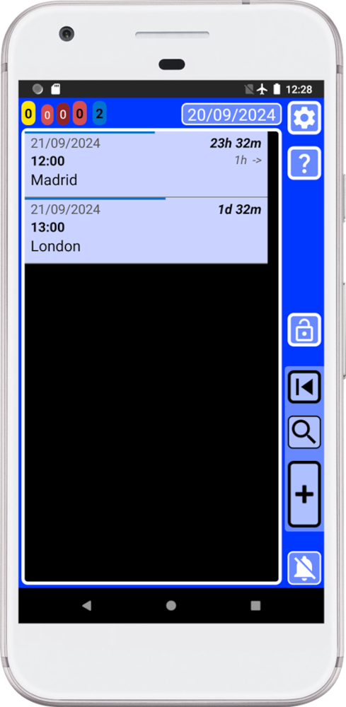
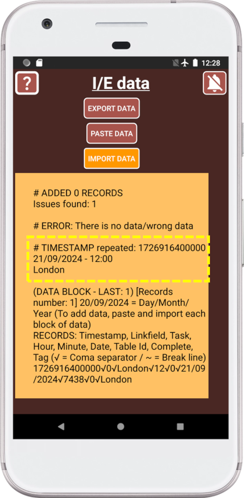

SECURElogBook provides a unique and secure way to import and export information without needing permission to access your device. Additionally, it works without an internet connection.
Basically, the Import/Export window is able to transform SECURElogBook information into text (records, Favourite menu's data and user times data). It can also read that text information to recreate records, Favourite menu's data and user times data. So, you can store this text to create backups of your SECURElogBook data.
This feature lets you share workout records, create medication intake records for others. You can also export, edit, and re-import your information. You can use USB drives or any internet-based communication software to transfer your data.
SECURElogBook can store up to 18,446,744,073,709,551,616 records. With the ability to create backup copies, the storage capacity is virtually unlimited.
I will avoid storing information on cloud services as some companies can have access to your information. If you use a cloud service to store information, make sure it is encrypted. 7Zip is free software for Windows that will allow you to encrypt your files.
The best practice, to store your data, is to have your information encrypted in 3 different local USB/drives separated by 27m.
Like always, my duty is to try to explain everything, even when SECURElogBook is very easy to use as everything follows logic. But the more you know the more you can do üòâ
Things you need to know about the Import/Export system
1. Once you exit the window, the information is removed from the clipboard to prevent other applications from accessing your data.
2. The system will highlight the last thing you did by turning it orange:
Here we can see that we have pressed the EXPORT DATA button as the button is now orange.
3. When we press the IMPORT DATA button, the program will review the information before it uses it.
The background of the text box background will let you know if an issue was detected or not:
. Green => All OK.
. Orange => One or more records have issues and they have not been added. Additional information will help you to identify the issue.
. Red = ERROR. The program found big issues and no data was transfer.
If you did not change the information and you experience an issue during the process, check the program you are using to copy and paste the information.
If the program is not able to copy/paste all the information it will “break” the data and it will create issues.
The easiest way to store your information is creating draft documents in Gmail or Outlook, then you can create text files from it using a computer.
4. The program splits your data in small blocks to allow to copy and paste the information between programs. The more records you have the more blocks of data will be created.
Each block of data tells you all you need to know inside its header. After the header we will find the data.
The data is like a CSV (Comma-Separated Values) file where the coma is replaced by “√” and break lines are replaced by “~”. CSV files can be edited using Excel to create a table.
SECURElogBook file structure:
. Header information (first 2 lines):
. FIRST, information about the data.
. SECOND, column table headers.
. Data:
. Records, information that starts with a long number.
. Favourite menu's data, information that starts with “tasks_”.
. Users time data that starts with “users_time_”.
By the way, you don't need to know this information. It will be useful if you want to edit your information and put it back into the app.
Once we export the information, we can store it where ever we want as it is just text.
For technical reasons data is split in small blocks of around 120kb.
5. Each time you long press on a block of data, it will be highlighted in orange to let you know where you are in the process of copying information.
6. When we export information from SECURElogBook to create a backup, the total number of records will be indicated. So you can compare that value with the value shown in the last block of data, the one labeled with "LAST", after importing information. If both values are the same, that means all went OK.
7. SECURElogBook does not support automatic backups or migration to a new device. To transfer your SECURElogBook data to another device, you must use the SECURElogBook application. This means you need to export your data from the old device and then import it to the new device. This process ensures that your data remains under your control.
8. You can edit the information using a text editor like NotePad or similar. So, you can text editor to make changes to your information and then add it back.
Do not add or change these symbols:
√ = coma separator.
~ = break line.
SECURElogBook uses those symbols to code and decode the information.
9. SECURElogBook will not allow to have two or more records with the same date and time, that means having the same timestamp.
10. SAFE IMPORT. Let’s say we have these 2 records:

If you try to add a record with the same timestamp, same date and time, SECURElogBook will not allow to add the information as it will create issues.
SECURElogBook will give you information to let you know where the problem is:

In this case there is an issue, highlighted in yellow in the image above. We already have a record called “Madrid” at that time (21/09/2024 – 12:00). Adding a second record at the same time will create issues. If you want to trigger more than one record at the same time use a list.
If you import a record from someone else, if there is a time conflict, SECURElogBook will give you information to let you know where the issue is.
SECURElogBook will protect your data not allowing to add the information when it will conflict with your data.
Now you know a little bit more about how SECURElogBook works. It is not complicated since it uses logic everywhere, but it is necessary to know what logic is used.
EXPORT
To protect your data, the copied information will be deleted if you leave the Import/Export window.
1. Press
2. Press IMPORT/EXPORT DATA button.
3. Press EXPOR DATA button. Allow the program to work:
Once the process is completed you will see all the data blocks that we can store externally:
The more records you have the more data blocks will be created. In this case we have 2 data blocks.
We can see that we have a total of 319 records. This value is displayed inside the text box and inside the last data block.
Remember, the orange colour is used to let you know what you are doing. Right now, we can see that we pressed EXPORT DATA button as it is orange.
4. Copy the information from the first data block by holding it down.
The first data block will turn orange, letting us know that its data has been copied.
5. Paste the data in any text editor. If you do not have a text editor program, use Gmail or Outlook to create draft files. You will see something like this:
. Header information.
. Records information.
. Favourite menu's data.
. Users time data.
The first line of the header contains the block information to let you know where this information comes from.
6. Save the information as a text file.
7. Copy the information from the next data block by holding it down.
8. Repeat step 5 until there are no more data blocks to be copied.
9. Make sure to store the information in a safe place.
If you only have one data block, the file may be less than 115kb in size. Also, the last file, if you have more than one data block, may be less than 115kb in size.
If you have more than one block of data, each block of data (except last one) should have the same size, between 115-120kb.
IMPORT
1. Press
2. Press IMPORT/EXPORT DATA button.
3. Open the first backup file that will look like this:
. Header information.
. Records information.
. Favourite menu's data.
. Users time data.
All files must have a header, with 2 lines. Below the header we can find data of: records, Favourite menu's information and users time data. Favourite menu's information and users time data are normally at the end of last file.
Only if the backup file contains Favourite menu's information or users time data that information will be updated.
4. Copy all the information inside the file. Not copying all the information from the file can create issues.
5. Press PASTE DATA button:
6. Allow the data to be pasted:
Once the process is completed, we will see the information inside the text box:

Notice how the PASTE DATA button is now orange, to indicate that we pasted the information. Also, the text allow you read the header to know what file information was pasted. This little detail will allow you to know what are you doing at any time. So, it is easy to see that we just pasted “DATA BLOCK: 1”.
7. Press import data and allow SECURElogBook to complete the work:
SECURElogBook will check the information before it is added to the app.
Once the process is completed, we will see the information inside the text box:
Notice how the IMPORT DATA button is now orange, to indicate that we imported the information. Also, the text allow you read the header to know what file information was imported. This little detail will allow you to know what are you doing at any time. It is easy to see that we just imported “DATA BLOCK: 1”.
The background of the text box background will let you know if an issue was detected or not:
. Green => All OK.
. Orange => One or more records have issues and they have not been added. Additional information will help you to identify the issue.
. Red = ERROR. The program found big issues and no data was transfer.
8. It there are more files, open the next backup file and go to step 4.
The header of the last file tells you the theoretical total number of records to be imported (“Records number = ”). If you press the EXPORT DATA button, the text box will indicate how many records you currently have. Both values should match, if there are no previous records. If the values do not match is because we had a problem with the copy/paste process. Maybe you forgot to import a file. Maybe there is an issue with the software used to create the files or the text program is not able to copy all the information.